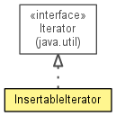

xdi2.core.util.iterators
Class InsertableIterator<T>
java.lang.Object
 xdi2.core.util.iterators.InsertableIterator<T>
xdi2.core.util.iterators.InsertableIterator<T>
- All Implemented Interfaces:
- Iterator<T>
public class InsertableIterator<T>
- extends Object
- implements Iterator<T>

| Methods inherited from class java.lang.Object |
clone, equals, finalize, getClass, hashCode, notify, notifyAll, toString, wait, wait, wait |
iterator
protected Iterator<T> iterator
iterators
protected Deque<Iterator<T>> iterators
append
protected boolean append
InsertableIterator
public InsertableIterator(Iterator<T> iterator,
boolean append)
hasNext
public boolean hasNext()
- Specified by:
hasNext in interface Iterator<T>
next
public T next()
- Specified by:
next in interface Iterator<T>
remove
public void remove()
- Specified by:
remove in interface Iterator<T>
insert
public void insert(Iterator<T> iterator)
Copyright © 2013. All Rights Reserved.